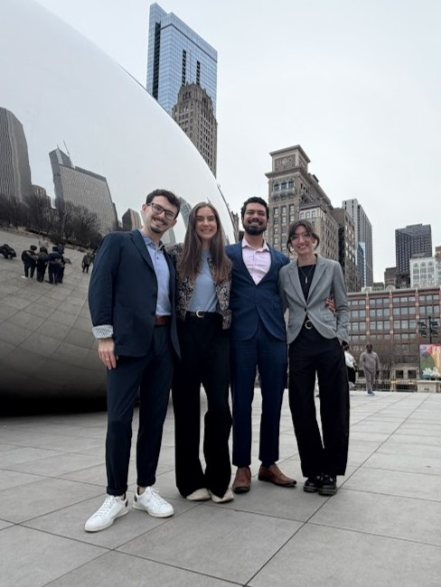
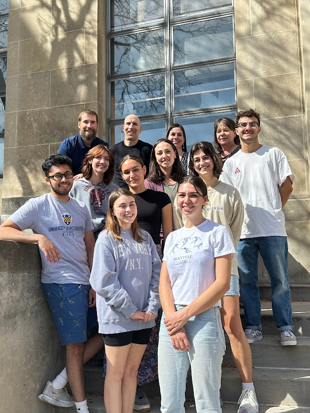
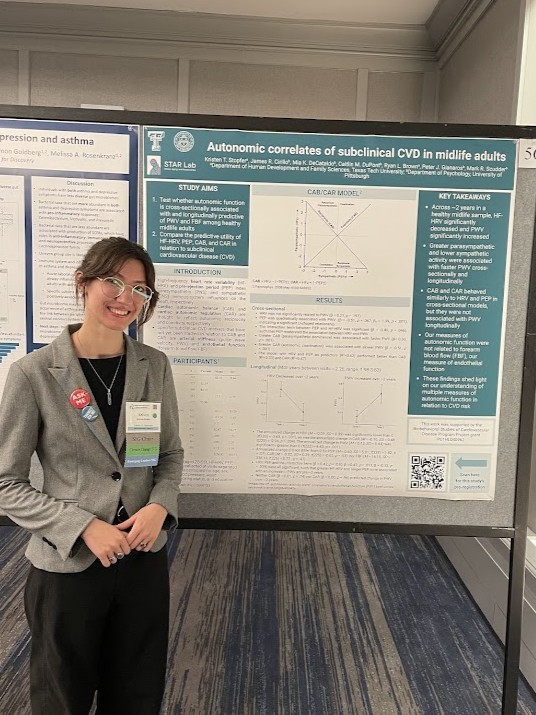

Research

Kristen is a trainee in the field of Health Psychology. She is currently a Master's candidate in Human Development and Family Sciences at Texas Tech University, where she is broadly interested in the cardiovascular correlates of extreme stress. She works in the Stress, Aging, and Relationships (STAR) Lab under the advisement of Dr. Ryan Linn Brown.

Kristen did her undergraduate studies at the University of Pittsburgh, where she first developed her love of research. She worked in the Laboratory for Psychophysiology and Health Neuroscience for 3 years under the advisement of Drs. Pete Gianaros and Mark Scudder. Here she gained expertise in psychophysiology data collection and scoring, and she trained 11 other undergraduates on these methods.

Kristen is early on in her career, so her research interests are vast! She has expertise in cardiovascular psychophysiology, and is particularly interested in blood pressure and blood pressure variability across different time scales. She is additionally interested in diving deeper into immunology. Beyond physiology, Kristen is broadly interested in stress, from acute psychological stress to bereavement. She hopes to additionally explore socioeconomic status and environmental stress in her future work.